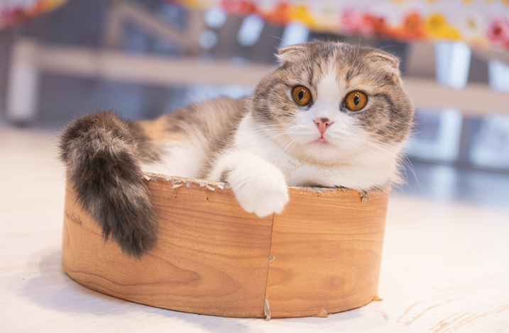

Dans l'objectif de passer un oral de bac, j'ai effectué au lycée un projet visant à concevoir un robot caméléon,
comportant plusieurs options : le changement de couleur en fonction du support sur lequel il se trouve, la détection de mouvement, ainsi que la prise de température.
Cela m'a permit :
L'acquisition des bases en programmation C++ sur Arduino :
Programmation des différents capteurs
Utilisation de logiciels de conception 3D : AutodeskTinkercad
Impression 3d
Conception d'un site web sur Wordpress
Travail en équipe, répartition des tâches
Pour de plus amples détails, je vous invite à visiter mon site ci-dessous.
Site web sur les chats
Conception de mon premier site web
Au cours de la première année de B.U.T. en réseaux et télécommunications,
j'ai été amenée à concevoir un site web en binôme sur un sujet que nous apprécions bien : les chats.
Ce projet m'a permit de progresser dans les compétences suivantes :
Programmation web : HTML 5
Graphisme : CSS 3
vérification du code sur W3C
Le lien vers notre site figure ci-dessous.

Projet sniffer ethernet
Projet Sniffer Ethernet - En partenariat avec Thalès Alenia Space
Projet d'études
Nous avons effectué ce projet en collaboration avec Thales Alenia Space lors de ma première année de Bachelor Universitaire de Technologie en réseaux et télécommunications
Le projet avait pour but de réceptionner un fichier binaire brut,
afin de l'analyser et le traiter pour pouvoir afficher ses données triées sur un site web dynamique,
le tout sur un Raspberry Pi 3.
Nous étions un groupe de trois étudiants.
Voici les tâches auxquelles j'ai participé :
J'ai pu participer au code Python qui avait pour but d'analyser le contenu des trames et d'en filtrer ses données.
J'ai configuré sur le Raspberry Pi 3 un serveur PHPMyadmin ainsi qu'un serveur web Apache2 pour héberger notre site web.
J'ai conçu les différentes tables des bases de données, je les ai liées au code python, ainsi qu'au site web sur lequel j'ai réalisé des requêtes SQL pour pouvoir afficher clairement les informations correspondantes à un test précis, choisi par l'utilisateur.
Mes camarades et moi avons pu étudier à cette occasion la gestion de projet, l'importance de la planification (diagramme de Gantt), de la répartition des tâches, ainsi que de la gestion des différents risques auxquels nous aurions pu être confrontés.
Ci-dessous quelques photos de notre site final, vous pouvez retrouver également notre rapport pour de plus amples détails.